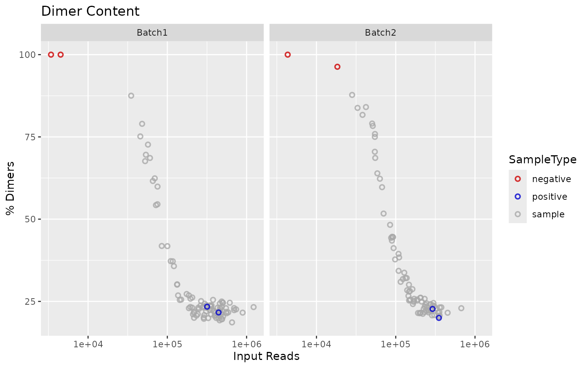
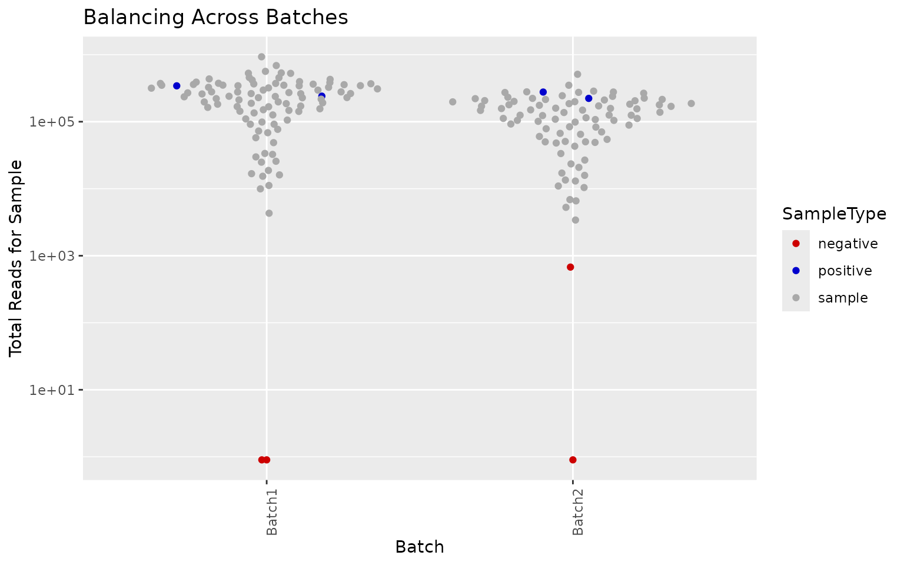
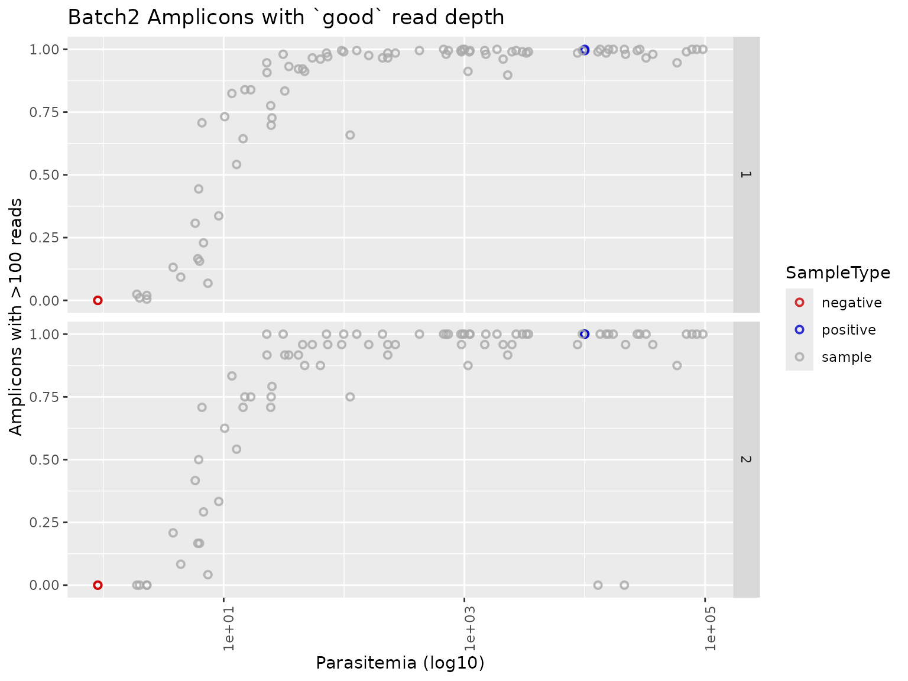
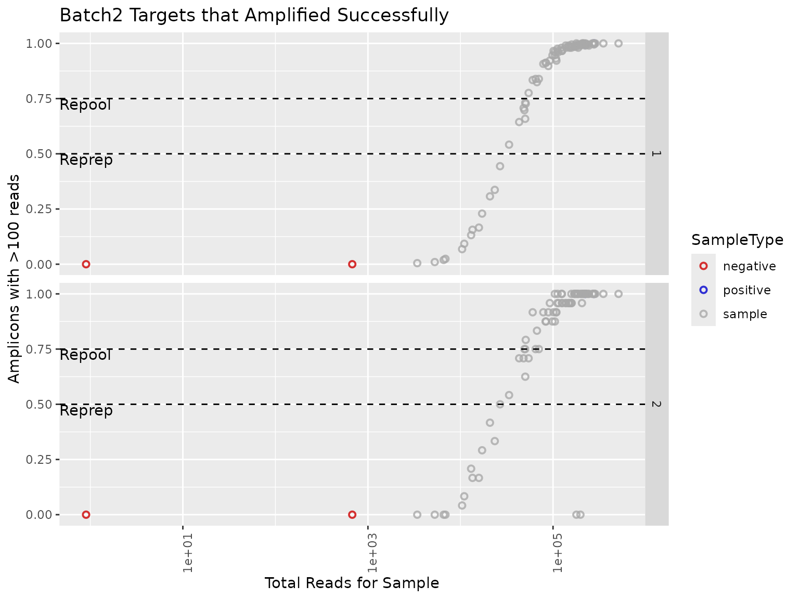
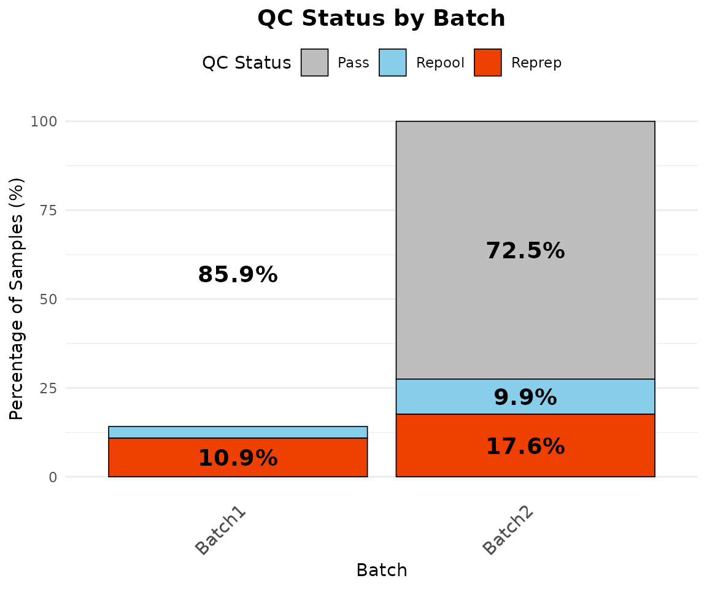
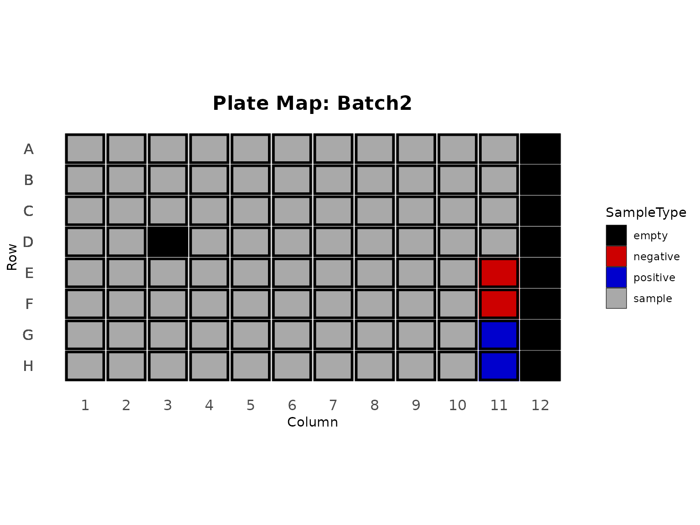
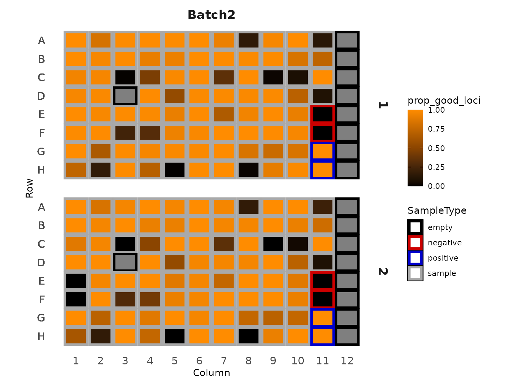
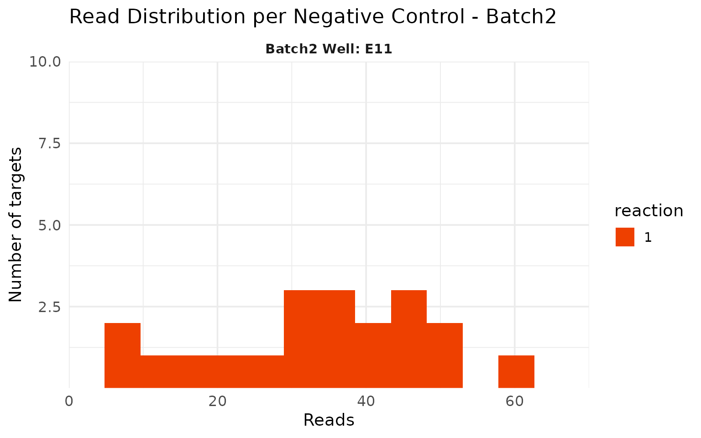
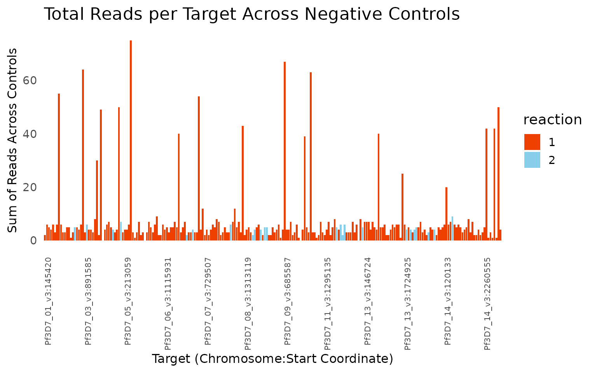

This tutorial runs the QC on an example Mad4hatter run from start to finish. The first section shows how to produce the full HTML report in one step; the rest walks through each part of the QC with the package functions, so you can see what the report is doing and reuse the steps in your own analyses.
The example run
The package includes a simulated run of the MAD4HatTeR panel, run
with Mad4hatter’s --pools D1,R1,R2. D1 and R1 were
amplified in one mPCR reaction and R2 in a second. The run has two
batches, each on its own 96-well plate with 2 positive controls (3D7)
and 2 negative controls. Batch1 fills the plate with 92 samples; Batch2
has 84 samples and column 12 left empty. The data is simulated from the
real MAD4HatTeR panel information, so target names, pools and target
lengths match a real run.
library(ampseqQC)
library(dplyr, warn.conflicts = FALSE)
tutorial_dir <- system.file("extdata", "tutorial", package = "ampseqQC")
results_dir <- file.path(tutorial_dir, "results")
manifest_file <- file.path(tutorial_dir, "manifest.csv")
list.files(results_dir, recursive = TRUE)
#> [1] "allele_data.txt" "amplicon_coverage.txt"
#> [3] "panel_information/amplicon_info.tsv" "sample_coverage.txt"The manifest describes each well:
manifest <- read_manifest(manifest_file)
head(manifest)
#> sample_name SampleType Batch Column Row Parasitemia
#> 1 B1_S01 sample Batch1 1 A 6788.9
#> 2 B1_S02 sample Batch1 1 B 1.3
#> 3 B1_S03 sample Batch1 1 C 11.1
#> 4 B1_S04 sample Batch1 1 D 453.2
#> 5 B1_S05 sample Batch1 1 E 16954.5
#> 6 B1_S06 sample Batch1 1 F 39949.5
count(manifest, Batch, SampleType)
#> Batch SampleType n
#> 1 Batch1 negative 2
#> 2 Batch1 positive 2
#> 3 Batch1 sample 92
#> 4 Batch2 negative 2
#> 5 Batch2 positive 2
#> 6 Batch2 sample 84Rendering the full report
render_qc_report() runs every step below and writes an
HTML report plus the QC output tables to output_dir. It
needs the Quarto
CLI.
render_qc_report(
results_dir = results_dir,
manifest_file = manifest_file,
output_dir = "qc_output"
)View the report for this example run.
The output directory contains:
| File | Contents |
|---|---|
QC_report.html |
The QC report |
reprep_repool_summary.csv |
Pass/repool/reprep call for every sample and reaction |
samples_to_repool.csv,
samples_to_reprep.csv
|
Samples needing repool or reprep |
positive_control_polyclonal_info.csv |
Alleles at multiallelic targets in positive controls |
negative_control_amplified_targets.csv |
Negative control targets above the read threshold |
missing_samples_report.csv |
Samples in the manifest with no allele data |
missing_targets_report.csv |
Panel targets with no allele data |
allele_data_filtered.txt |
Allele table filtered by reads and within-sample allele frequency |
The collapsed allele table and the resistance marker tables are also filtered when they are in the results directory.
Step by step
Loading the results
read_mad4hatter_results() reads the pipeline outputs and
trims the sequencing information from sample names (for example
B1_S01_S1_L001 becomes B1_S01) so they match
the manifest.
results <- read_mad4hatter_results(results_dir)
names(results)
#> [1] "sample_coverage" "amplicon_coverage"
#> [3] "allele_data" "panel_information"
#> [5] "collapsed_allele_data" "resmarker_table"
#> [7] "resmarker_microhaplotype_table"
head(results$amplicon_coverage)
#> sample_name target_name reads OutputDada2
#> 1 B1_S01 PKNH_12_v2-0198893-0199083 3 0
#> 2 B1_S01 Pf3D7_01_v3-0145420-0145630 3183 3035
#> 3 B1_S01 Pf3D7_01_v3-0162888-0163092 411 358
#> 4 B1_S01 Pf3D7_01_v3-0181544-0181729 1350 1175
#> 5 B1_S01 Pf3D7_01_v3-0194763-0194942 730 679
#> 6 B1_S01 Pf3D7_01_v3-0455826-0456021 2651 2149
#> OutputPostprocessing
#> 1 0
#> 2 3002
#> 3 348
#> 4 1151
#> 5 674
#> 6 2134Pools and reactions
The pools in the run are read from the panel information and mapped to reactions using the panel settings. The defaults cover the MAD4HatTeR and PfPHAST pools:
default_panel_settings()
#> <ampseqQC panel settings>
#> Pool -> reaction:
#> 1: D1, D1.1, 1A, R1, R1.1, R1.2, 1B, 5, M1, M1.1, M1.addon
#> 2: R2, R2.1, 2, M2, M2.1
#> Targets excluded from QC: 14
summarise_pools(results$panel_information)
#> # A tibble: 3 × 3
#> pool reaction n_targets
#> <chr> <chr> <int>
#> 1 D1 1 170
#> 2 R1 1 47
#> 3 R2 2 31Targets shared by pools in different reactions are counted in each reaction. In this run two targets are in both R1 and R2:
panel_reactions <- assign_reactions(results$panel_information)
panel_reactions |>
count(target_name) |>
filter(n > 1)
#> target_name n
#> 1 Pf3D7_13_v3-2841410-2841661 2
#> 2 Pf3D7_13_v3-2844354-2844599 2If your run uses pools that aren’t in the settings, or a different
reaction layout, add them with panel_settings(). Pools
without a reaction stop the QC rather than being guessed:
bespoke_panel <- results$panel_information |>
mutate(pool = ifelse(pool == "R2", "myPool", pool))
assign_reactions(bespoke_panel)
#> Error:
#> ! No reaction is defined for pool(s): myPool.
#> Supply the reaction for each pool with panel_settings(), e.g. panel_settings(c("myPool" = "1"), base = default_panel_settings())
settings <- panel_settings(c(myPool = "2"), base = default_panel_settings())
assign_reactions(bespoke_panel, settings) |>
count(reaction)
#> reaction n
#> 1 1 214
#> 2 2 31Targets excluded from QC
Species identification targets and long targets are left out of the QC calculations, because they are not expected to amplify in every sample. They are still kept in the filtered allele tables.
excluded <- qc_excluded_targets(results$panel_information, long_target_threshold = 275)
excluded$long
#> [1] "Pf3D7_02_v3-0320675-0320924" "Pf3D7_03_v3-0240989-0241224"
#> [3] "Pf3D7_05_v3-0615411-0615646" "Pf3D7_06_v3-0857486-0857720"
#> [5] "Pf3D7_11_v3-1294305-1294547" "Pf3D7_13_v3-1465035-1465280"
#> [7] "Pf3D7_13_v3-2840473-2840721" "Pf3D7_13_v3-2841410-2841661"
#> [9] "Pf3D7_13_v3-2844354-2844599"
intersect(excluded$excluded, results$panel_information$target_name)
#> [1] "Pf3D7_13_v3-1041624-1041829" "PmUG01_12_v1-1398020-1398213"
#> [3] "PocGH01_12_v1-1106482-1106671" "PvP01_12_v1-1185007-1185184"
#> [5] "PKNH_12_v2-0198893-0199083" "Pf3D7_02_v3-0320675-0320924"
#> [7] "Pf3D7_03_v3-0240989-0241224" "Pf3D7_05_v3-0615411-0615646"
#> [9] "Pf3D7_06_v3-0857486-0857720" "Pf3D7_11_v3-1294305-1294547"
#> [11] "Pf3D7_13_v3-1465035-1465280" "Pf3D7_13_v3-2840473-2840721"
#> [13] "Pf3D7_13_v3-2841410-2841661" "Pf3D7_13_v3-2844354-2844599"
panel_reactions <- panel_reactions |>
filter(!target_name %in% excluded$excluded)
amplicon_coverage_qc <- results$amplicon_coverage |>
filter(!target_name %in% excluded$excluded)
nloci_table <- count_targets_per_reaction(panel_reactions)
nloci_table
#> reaction nreactionloci
#> 1 1 205
#> 2 2 24Amplification success per sample
A target is successfully amplified if it has more than
read_threshold reads. summarise_samples()
gives the proportion of targets amplified per sample and reaction.
amplicon_coverage_with_manifest <- merge_amplicon_coverage(amplicon_coverage_qc, manifest, panel_reactions)
summary_samples <- summarise_samples(amplicon_coverage_with_manifest, nloci_table, manifest, read_threshold = 100)
summary_samples |>
select(sample_name, Batch, reaction, reads_per_reaction, n_good_loci, prop_good_loci) |>
head()
#> # A tibble: 6 × 6
#> sample_name Batch reaction reads_per_reaction n_good_loci prop_good_loci
#> <chr> <chr> <chr> <int> <int> <dbl>
#> 1 B1_NEG1 Batch1 1 0 0 0
#> 2 B1_NEG1 Batch1 2 0 0 0
#> 3 B1_NEG2 Batch1 1 0 0 0
#> 4 B1_NEG2 Batch1 2 0 0 0
#> 5 B1_POS1 Batch1 1 305733 205 1
#> 6 B1_POS1 Batch1 2 37249 24 1Primer dimers make up most of the reads in low-density samples and in negative controls:
sample_coverage_with_manifest <- merge_sample_coverage(results$sample_coverage, manifest)
generate_dimer_plot(sample_coverage_with_manifest)
Batch2 was sequenced less deeply than Batch1:
generate_balancing_plot(summary_samples)
Amplification success increases with parasitemia and read depth. The dashed lines show the reprep and repool thresholds.
generate_parasitemia_by_amplification_success_plots(summary_samples, threshold = 100)$Batch2
generate_reads_by_amplification_success_plots(summary_samples, read_threshold = 100)$Batch2
#> Warning in ggplot2::scale_x_log10(): log-10 transformation introduced infinite values.
#> log-10 transformation introduced infinite values.
QC calls
Samples are classified per reaction: below
reprep_threshold of targets amplified they need re-prep,
below repool_threshold they need re-pool. Samples in the
manifest with no data are marked for reprep. Negative controls are not
classified.
qc_calls <- generate_reprep_repool_table(summary_samples, reprep_threshold = 0.5, repool_threshold = 0.75) |>
fill_missing_data(manifest)
qc_calls |>
filter(status != "pass") |>
arrange(Batch, sample_name, reaction)
#> # A tibble: 68 × 8
#> sample_name Batch SampleType reaction status reason reads_per_reaction
#> <chr> <chr> <chr> <chr> <chr> <chr> <dbl>
#> 1 B1_S02 Batch1 sample 1 reprep < reprep th… 13661
#> 2 B1_S02 Batch1 sample 2 reprep < reprep th… 1692
#> 3 B1_S03 Batch1 sample 1 repool < repool th… 30071
#> 4 B1_S03 Batch1 sample 2 repool < repool th… 3535
#> 5 B1_S12 Batch1 sample 1 reprep < reprep th… 16866
#> 6 B1_S12 Batch1 sample 2 reprep < reprep th… 1871
#> 7 B1_S20 Batch1 sample 1 reprep < reprep th… 15019
#> 8 B1_S20 Batch1 sample 2 reprep < reprep th… 1751
#> 9 B1_S24 Batch1 sample 1 reprep < reprep th… 9005
#> 10 B1_S24 Batch1 sample 2 reprep < reprep th… 947
#> # ℹ 58 more rows
#> # ℹ 1 more variable: prop_good_loci <dbl>A few things stand out. Low-parasitemia samples fail in both reactions. B2_S05 and B2_S06 amplified well in reaction 1 but not in reaction 2, which points to a problem with the reaction 2 mPCR for those wells rather than with the samples. B2_S20 is in the manifest but has no data, because it was not sequenced.
The overall pass rate by batch excludes controls:
qc_summary_table(qc_calls)
#> # A tibble: 2 × 6
#> Batch pass repool reprep total pass_rate
#> <chr> <int> <int> <int> <int> <dbl>
#> 1 Batch1 79 3 10 92 85.9
#> 2 Batch2 66 9 16 91 72.5
qc_summary_by_batch(qc_calls) |>
plot_qc_status_by_batch()
#> Warning: Removed 1 row containing missing values or values outside the scale range
#> (`geom_bar()`).
Plate maps show where samples and controls are on each plate, and help spot problems with particular wells or regions of the plate. Empty wells, such as column 12 of the Batch2 plate, are shown in black:
quadrants <- create_plate_template(summary_samples, unique(summary_samples$Batch))
plot_plate_layouts(quadrants)$Batch2
plot_plate_heat_maps(
summary_samples, quadrants,
fill_param = "prop_good_loci", scale_midpoint = 0.5, scale_label = "prop_good_loci"
)$Batch2
Positive controls
The positive controls are monoclonal 3D7, so each target should have a single allele. A small number of targets with a low-frequency second allele (here PCR errors at 2 to 4% frequency) is expected; many would suggest contamination.
allele_data_qc <- results$allele_data |>
filter(!target_name %in% excluded$excluded) |>
add_allele_frequency()
positive_controls <- summarise_positive_controls(allele_data_qc, manifest, read_filter = 0, af_filter = 0.01)
positive_controls$category_counts
#> # A tibble: 8 × 3
#> sample_name Category Count
#> <chr> <chr> <int>
#> 1 B1_POS1 2 Alleles 4
#> 2 B1_POS1 Monoallelic 225
#> 3 B1_POS2 2 Alleles 2
#> 4 B1_POS2 Monoallelic 227
#> 5 B2_POS1 2 Alleles 2
#> 6 B2_POS1 Monoallelic 227
#> 7 B2_POS2 2 Alleles 3
#> 8 B2_POS2 Monoallelic 226
positive_controls$polyclonal_information |>
select(sample_name, target_name, reads, AlleleFreq)
#> # A tibble: 22 × 4
#> sample_name target_name reads AlleleFreq
#> <chr> <chr> <int> <dbl>
#> 1 B1_POS1 Pf3D7_05_v3-0668787-0668979 406 0.969
#> 2 B1_POS1 Pf3D7_05_v3-0668787-0668979 13 0.0310
#> 3 B1_POS1 Pf3D7_07_v3-0405597-0405815 606 0.970
#> 4 B1_POS1 Pf3D7_07_v3-0405597-0405815 19 0.0304
#> 5 B1_POS1 Pf3D7_14_v3-0421354-0421514 2945 0.961
#> 6 B1_POS1 Pf3D7_14_v3-0421354-0421514 121 0.0395
#> 7 B1_POS1 Pf3D7_14_v3-1392869-1393059 968 0.972
#> 8 B1_POS1 Pf3D7_14_v3-1392869-1393059 28 0.0281
#> 9 B1_POS2 Pf3D7_01_v3-0455826-0456021 621 0.979
#> 10 B1_POS2 Pf3D7_01_v3-0455826-0456021 13 0.0205
#> # ℹ 12 more rowsRaising the allele frequency filter removes these low-frequency alleles:
summarise_positive_controls(allele_data_qc, manifest, af_filter = 0.05)$polyclonal_information
#> # A tibble: 0 × 7
#> # ℹ 7 variables: sample_name <chr>, target_name <chr>,
#> # pseudocigar_masked <chr>, reads <int>, AlleleFreq <dbl>,
#> # NumASVs_Meeting_Threshold <int>, Category <chr>Negative controls
Negative controls should have few or no reads. B2_NEG1 has low-level reads at several D1 targets:
amplicons_negative <- negative_control_amplicons(amplicon_coverage_with_manifest)
negative_control_targets_over_threshold(amplicons_negative, negative_control_read_threshold = 50)
#> sample_name target_name OutputPostprocessing
#> 1 B2_NEG1 Pf3D7_05_v3-0395919-0396103 60
#> 2 B2_NEG1 Pf3D7_09_v3-0685587-0685792 51
plot_negative_control_histogram(amplicons_negative |> filter(Batch == "Batch2"), batch_name = "Batch2")
Summing reads per target across negative controls shows which targets are affected. In the report this plot is interactive.
summarise_negative_control_targets(amplicons_negative, results$panel_information) |>
plot_negative_control_target_reads()
Output tables
The allele tables written by the report keep all targets, including those excluded from QC, and are filtered by reads and within-sample allele frequency:
allele_data_filtered <- filter_allele_table(
results$allele_data,
group_cols = allele_table_group_cols()$allele_data,
read_filter = 0,
af_filter = 0.01
)
nrow(results$allele_data)
#> [1] 56236
nrow(allele_data_filtered)
#> [1] 56234
missing_samples_report(results$allele_data, manifest)
#> sample_name Batch SampleType Row Column Parasitemia
#> 1 B2_S20 Batch2 sample D 3 14.9Using your own data
Point render_qc_report() at your Mad4hatter results
directory and manifest. The manifest needs the columns
sample_name, SampleType (sample,
positive or negative), Batch,
Column, Row and Parasitemia.
Thresholds can be changed with the arguments of
render_qc_report(), and pools outside MAD4HatTeR and
PfPHAST need a panel:
render_qc_report(
results_dir = "path/to/results",
manifest_file = "path/to/manifest.csv",
output_dir = "qc_output",
panel = panel_settings(c(AMPLseq = "1"), base = default_panel_settings()),
read_threshold = 50
)